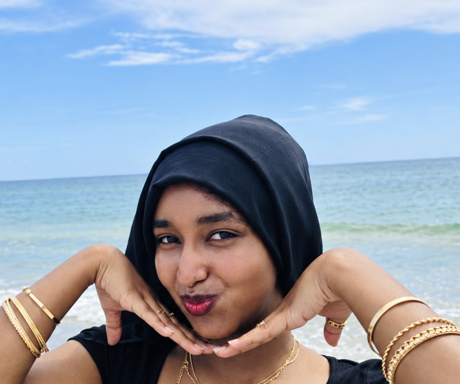
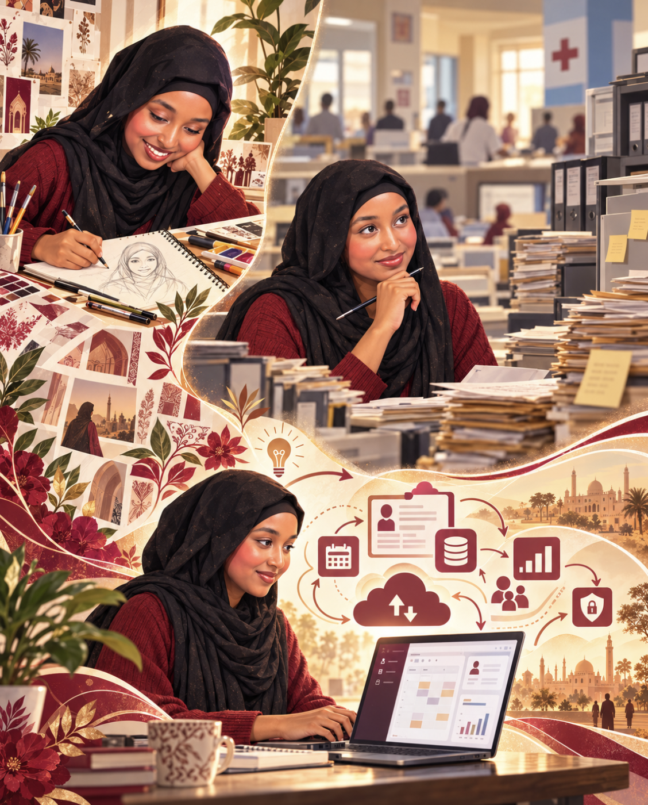
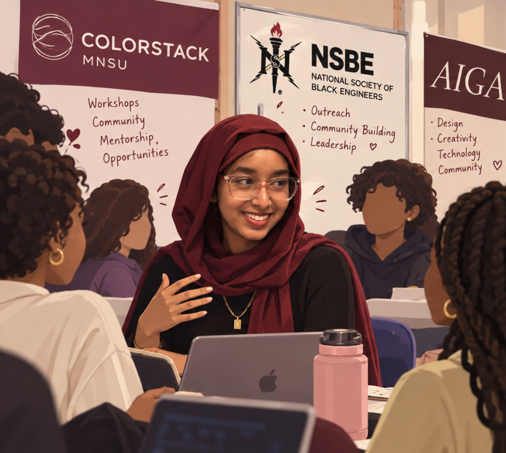
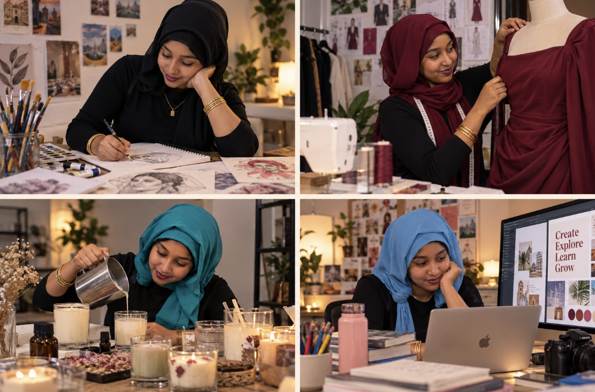

About Sabrina

My name is Sabrina Mohammed, a senior Computer Information Technology and Graphic Design student at Minnesota State University, Mankato. I am inspired to pursue a path in cloud technology where I could design solutions that benefit others. Whether through code, design, or strategy, I’m driven by the idea of creating tools that are thoughtful, efficient, and impactful.
Growing up, I was all about the arts — sketching, designing, and expressing myself visually. But everything shifted when I started working in a healthcare clinic. I saw firsthand how outdated systems affected patient care, and that sparked a new passion: using technology to fix real-world problems. I began my journey as a full-stack developer, building cloud-based solutions to streamline clinic operations.
While I loved solving problems with code, I realized the real magic happens when tech meets thoughtful design. It wasn’t until my high school advisor introduced me to UX/UI design that everything clicked.
Today, I combine my background in cloud development with my love for design to create user-first, scalable solutions that work just as beautifully as they look.

My plot twist? I didn’t leave tech — I elevated it with design.

I’m actively involved in communities that support diversity, creativity, and technical growth. As Technical Director for ColorStack MNSU, I help lead initiatives that empower underrepresented students in tech through workshops and events. I served as a Senator for the National Society of Black Engineers, where I support outreach and community-building efforts, and I’m also a member of AIGA, where I explore the intersection of design and technology. Currently, I’ve been expanding my technical foundation as a CodePath Intermediate Cybersecurity Fellow, where I’m gaining hands-on experience in areas like threat detection, network security, and ethical hacking.
When I’m not working…
Outside of tech, I love expressing myself through creativity—sketching, painting, designing and making clothes and more recently, exploring candle making. I’m always eager to try and learn new things, and that curiosity fuels many of my hobbies and side projects. From hands-on crafts to digital design, I enjoy experimenting across different mediums. In the coming years, I hope to continue growing by learning from diverse communities and blending my passions in ways that bring both creativity and meaning into my work.
